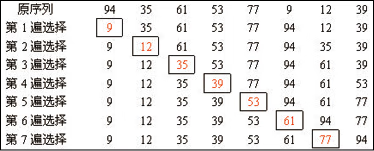
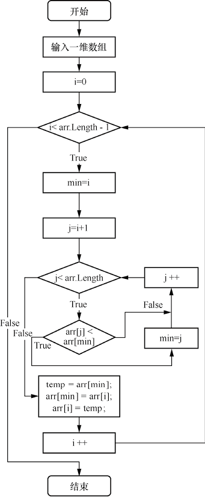
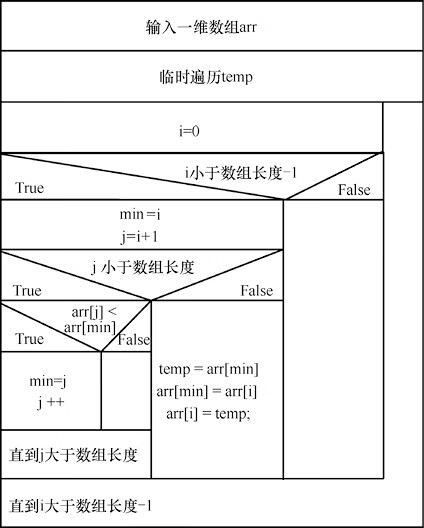
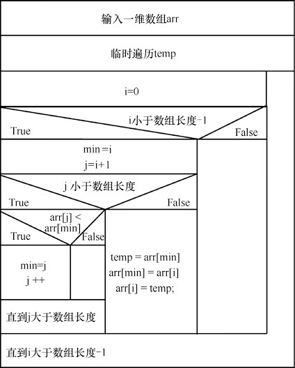
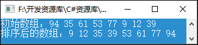

首页 > 编程笔记
C#选择排序算法（附带源码）
选择排序算法的排序速度要比冒泡排序算法快一些，也是常用的数组排序算法，初学者应该掌握。
例如，有一个小学生从包含数字 1～10 的乱序的数字堆中分别选择合适的数字，组成按 1～10 的顺序排列的数列。
这个学生首先从数字堆中选出 1，放在第一位；然后选出 2（注意这时数字堆中已经没有1了），放在第二位；依次类推，直到其找到数字 9，放到 8 的后面；最后剩下 10，就不用选择了，直接放到最后就可以了。
与冒泡排序算法相比，选择排序算法的交换次数要少很多，所以速度会快些。
使用选择排序算法排序的过程如图1所示。
创建一个控制台应用程序，使用选择排序算法对一维数组中的元素按从小到大的顺序进行排序，C# 代码如下：
1. 基本思想
选择排序算法的基本思想是将指定排序位置与其他数组元素分别进行比较，如果满足条件就交换元素值。注意这里不是交换相邻元素，而是把满足条件的元素与指定的排序位置交换（如从最后一个元素开始排序），这样排序好的位置逐渐扩大，最后排序好整个数组。例如，有一个小学生从包含数字 1～10 的乱序的数字堆中分别选择合适的数字，组成按 1～10 的顺序排列的数列。
这个学生首先从数字堆中选出 1，放在第一位；然后选出 2（注意这时数字堆中已经没有1了），放在第二位；依次类推，直到其找到数字 9，放到 8 的后面；最后剩下 10，就不用选择了，直接放到最后就可以了。
与冒泡排序算法相比，选择排序算法的交换次数要少很多，所以速度会快些。
2. 计算过程
每一轮从待排序的数据元素中选出最小（或最大）的一个元素，按顺序放在已排好序的数列的最后，直到全部待排序的数据元素排完。使用选择排序算法排序的过程如图1所示。

图1：选择排序算法的排序过程
图1：选择排序算法的排序过程
3. 流程图和代码
选择排序算法的传统流程图和 N-S 结构化流程图分别如图2和图3所示。

图2：选择排序算法的传统流程图

图3：选择排序算法的 N-S 结构化流程图
图2：选择排序算法的传统流程图

图3：选择排序算法的 N-S 结构化流程图
创建一个控制台应用程序，使用选择排序算法对一维数组中的元素按从小到大的顺序进行排序，C# 代码如下：
static void Main(string[] args)
{
//定义一个一维数组，并赋值
int[] arr = new int[] { 94, 35, 61, 53, 77, 9, 12, 39 };
Console.Write("初始数组：");
foreach (int n in arr) //循环遍历定义的一维数组，并输出其中的元素
Console.Write("{0}", n + " ");
Console.WriteLine();
int min; //定义一个int变量，用来存储数组下标
//循环访问数组中的元素值（除最后一个）
for (int i = 0; i < arr.Length - 1; i++)
{
min = i; //为定义的数组下标赋值
//循环访问数组中的元素值（除第一个）
for (int j = i + 1; j < arr.Length; j++)
{
if (arr[j] < arr[min]) //判断相邻两个元素值的大小
min = j;
}
int t = arr[min]; //定义一个int变量，用来存储比较大的数组元素值
arr[min] = arr[i]; //将小的数组元素值移动到前一位
arr[i] = t; //将int变量中存储的较大的数组元素值向后移
}
Console.Write("排序后的数组：");
foreach (int n in arr) //循环访问排序后的数组元素并输出
Console.Write("{0}", n + " ");
Console.ReadLine();
}
运行 C# 程序，效果如图4所示。

图4：选择排序算法运行结果
图4：选择排序算法运行结果
关注公众号「站长严长生」，在手机上阅读所有教程，随时随地都能学习。内含一款搜索神器，免费下载全网书籍和视频。

微信扫码关注公众号